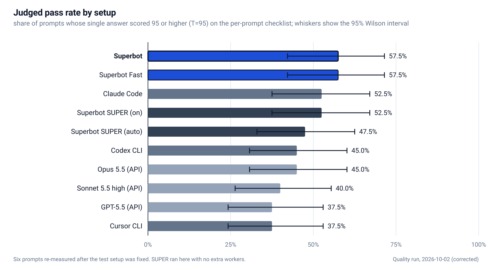
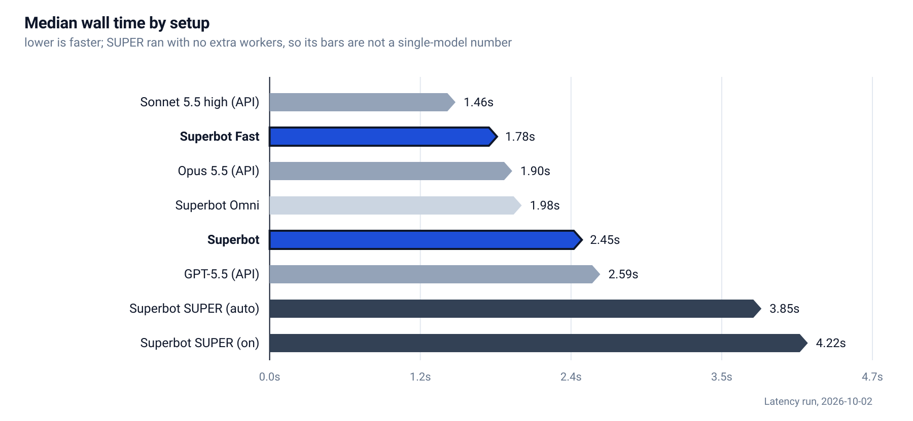
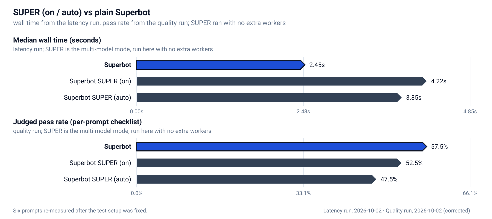
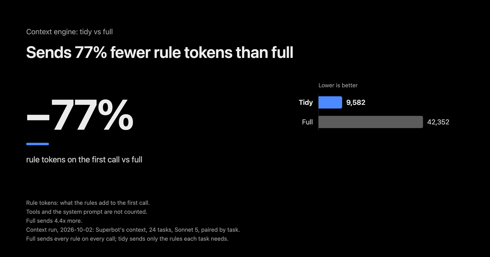

benchmark figures
two finished runs behind the charts, and a context run behind the last one.
latency: internal run, 2026-10-02.
quality: internal run, 2026-10-02 (corrected), judge threshold T=95.
context: internal run, 2026-10-02.
every SVG is vector, published at 2x.



Tools and the system prompt are not counted. Context run, 2026-10-02

how these charts are made. the first quality run happened before this page existed; six of its 40 prompts were re-measured afterwards, once the test setup was fixed (how tool use is recorded, and the rival CLIs' network and permission settings), and those cells replace the originals. That is a correction, not a fresh full run. The pass test is the per-prompt checklist at the frozen threshold T=95, and the latency run supplies the median wall time per setup. SUPER is the multi-model mode; in these runs it answered with no extra workers, so its bars are not a single model's and the charts say so. The GPT row is named by the model its answers say served them, GPT-5.5. README.md next to this page lists every asset.
six answer-level comparisons from the quality run are browsable as a contact sheet: answers/answers.html.
every winning metric on one page: results.html.
one card per metric, plus the hero, social and comparison graphics: kit/index.html.
sources
- quality-bar.svg, answers sheet. Quality run, 2026-10-02 (corrected): the first quality run with six of its 40 prompts re-measured. Judged pass rate on the per-prompt checklist, T=95, 40 prompts with one judged answer each.
- latency-chevron.svg. Latency run, 2026-10-02: 543 rows, median wall time per setup.
- super-vs-plain.svg. both runs above: wall time from the latency run, pass rate from the quality run.
- kit/wins/x1-context-tokens.png. Context run, 2026-10-02: 24 tasks on Sonnet 5, tidy paired with full by task. Run on Superbot's context, with the task-aware tidy render.